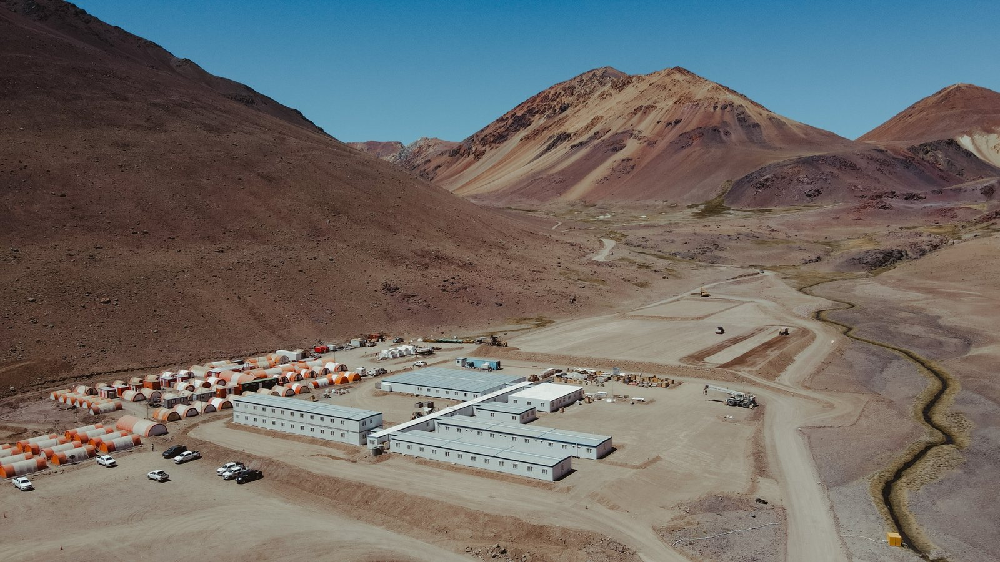

21年开采计划，还有再延数十年的空间
可行性研究的基准情景以证实及概略储量为依据，矿山服务年限为21年。但矿床的潜力不止于此。借助力拓的Nuton浸出技术，原生硫化矿有望沿用同一套基础设施进行处理；若建设传统选矿厂，则可提高铜回收率，并可同时回收金和银。麦克尤恩铜业表示，两条路线均可能使矿山服务年限延长30年或更久，Los Azules或将由此成为一座延续不止一代人的矿山。[1]
增长情景不在可行性研究范围之内，且部分依赖推断资源量；推断资源量的地质推测性过强，不能对其施加经济方面的考量。若建设选矿厂，还需配套尾矿储存设施，用水量也会增加；无论采用哪条路线，都还需开展进一步研究，并取得许可和融资。 技术信息与合资格人士 ↓
项目概况
| 位置 | 阿根廷圣胡安省卡林加斯塔；海拔约3,500米，位于卡林加斯塔镇西北偏西约80公里、智利边境以东6公里处[6] |
|---|---|
| 所有者 | 麦克尤恩铜业（McEwen Copper Inc.），通过Andes Corporación Minera S.A.持有[7] |
| 负责人 | 麦克尤恩铜业董事总经理迈克尔·梅丁；2022年2月起领导Los Azules[2, 8] |
| 矿床 | 安第斯斑岩型铜矿床，发育次生富集带[1] |
| 工艺 | 露天开采、堆浸及溶剂萃取-电积（SX-EW）；拟在现场产出纯度99.99%的LME A级阴极铜[1] |
| 产量 | 第1至5年每年20.48万吨；21年矿山服务期内年均14.82万吨[1] |
| 成本 | C1现金成本1.71美元/磅；全维持成本（AISC）2.11美元/磅[1] |
| 用水 | 较传统磨矿选矿工艺节水74%；矿山服务期内平均用水量158升/秒[1] |
| 碳排放 | 每吨铜1,082千克二氧化碳当量（范围一和范围二），行业平均水平估计为4,026千克（Skarn Associates）；目标于2038年实现碳中和[1] |
| 电力 | 计划100%使用可再生能源，经由YPF Luz自费建设的高压输电线路供电[1, 3] |
| 尾矿 | 不建尾矿坝[1] |
| 环境许可 | 2024年12月取得，涵盖建设及运营[9, 10] |
| RIGI | Resolución 1553/2025：投资计划26.72亿美元；首个获批的铜矿项目；承诺将供应商、货物及工程支出的61.1%用于本地供应商[4, 11] |
| 排名 | 按矿产资源总量计为全球第十大未开发斑岩型铜矿；按标普全球（S&P Global）2024年数据，投产后其产量将在423座在产铜矿中位列第26[1] |
| 增长潜力 | 采用Nuton浸出技术或传统选矿厂处理原生硫化矿，可能使矿山服务年限延长30年或更久。这一增长情景不在可行性研究范围之内，且部分依赖推断资源量[1] |
| 下一步 | 预计于2027年年中作出最终投资决定并完成项目全额融资；目标于2030年实现阴极铜商业化生产[5] |


矿产储量与资源量
估算数据来自2025年10月的可行性研究，生效日期为2025年9月3日。[1, 12]
储量及资源量所含铜金属量
- 证实及概略储量102 亿磅
资源量（不含储量）
- 探明及控制资源量54 亿磅
- 推断资源量200 亿磅
各类别单独列示，数据不作相加。不属于储量的资源量尚未证实具有经济可行性。
矿产储量（证实及概略）
| 类别 | 矿石量（百万吨） | 铜品位（% Cu） | 铜金属量（百万磅） |
|---|---|---|---|
| 证实 | 229.9 | 0.683 | 3,463 |
| 概略 | 793.2 | 0.386 | 6,754 |
| 证实及概略储量合计 | 1,023.1 | 0.453 | 10,217 |
储量估算采用的铜价：4.25美元/磅。采用可变边界值，为每吨净冶炼收益（NSR）4.79至7.23美元。储量按100%权益口径报告。
矿产资源量（不含储量）
| 类别 | 矿石量（百万吨） | 铜品位（% Cu） | 铜金属量（十亿磅） |
|---|---|---|---|
| 探明及控制 | 965.5 | 0.255 | 5.4 |
| 推断 | 4,239.3 | 0.214 | 20.0 |
资源量估算采用的铜价：4.80美元/磅（金价2,500美元/盎司，银价32美元/盎司）。所列资源量不含矿产储量，亦未与储量相加。其中大部分资源量（包括全部推断资源量）是以磨矿选矿或Nuton等先进浸出工艺处理为前提报告的，而可行性研究基准情景并不包含这些工艺。
可行性研究经济指标
| 初始资本支出 | 31.68亿美元 |
|---|---|
| 税后净现值（折现率8%） | 29.40亿美元 |
| 税后内部收益率 | 19.8% |
| 投资回收期 | 3.9年 |
| 矿山服务年限 | 21年 |
| 基准情景铜价 | 4.35美元/磅 |
| 维持性资本支出（矿山服务期内） | 21.31亿美元 |
2025年10月7日公布的可行性研究基准情景。[1]
融资
2.4亿美元定期贷款，2026年8月
2026年8月27日，麦克尤恩铜业完成一笔2.4亿美元优先有担保定期贷款，用于Los Azules的工程设计和早期工程，以及一般公司用途。[5, 13]
| 金额 | 2.4亿美元，优先有担保 |
|---|---|
| 期限 | 4年 |
| 利率 | 年利率12.0%，按月付息 |
| 认股权证 | 每100万美元本金配发15,000份麦克尤恩铜业五年期普通股认股权证，行权价每股40美元 |
| 资金用途 | Los Azules工程设计和早期工程；一般公司用途 |
| 贷款方 | 金额 |
|---|---|
| Sprott Natural Resource Investment Partners | 1.12亿美元 |
| Rob McEwen | 8,500万美元 |
| 其他贷款方 | 4,300万美元 |
This financing reflects our lenders' confidence in Los Azules and in the progress Argentina has made over the past two and a half years. The initiatives of President Javier Milei have helped make Argentina an increasingly attractive destination for large-scale foreign investment. Economic stabilization, stronger credit ratings, lower country risk and the RIGI are bringing long-term capital back to the country. San Juan continues to demonstrate the qualities of a dependable mining jurisdiction, supported by strong institutions, rigorous processes and sound governance. We are proud to be building Los Azules here.此次融资体现了贷款方对Los Azules的信心，也体现了他们对阿根廷过去两年半所取得进展的信心。哈维尔·米莱总统推行的举措，助力阿根廷日益成为大规模外国投资青睐的目的地。经济企稳、信用评级提升、国家风险下降以及RIGI，正在推动长期资本重返阿根廷。圣胡安持续展现出可靠矿业辖区的特质，拥有健全的制度、严谨的程序和良好的治理。我们为在这里建设Los Azules而自豪。（英文原声明的译文）
融资记录
| 2021年 | 麦克尤恩铜业成立，专门推进Los Azules项目，同时完成8,000万美元B轮私募配售[14] |
|---|---|
| 2021年以来 | 通过私募配售累计募资4.53亿美元（含2021年B轮），Stellantis和力拓旗下的Nuton作为战略投资者参与[6] |
| 2025年9月 | 与国际金融公司（IFC）签署合作协议，使Los Azules符合IFC环境、社会和治理标准，为未来可能的债务和股权融资做准备[15] |
| 2025年9–10月 | 以26.72亿美元投资计划获准纳入RIGI[11] |
| 2026年5月 | 法国兴业银行受聘担任项目债务融资独家财务顾问[16] |
| 2026年8月 | 完成2.4亿美元优先有担保定期贷款[5] |
| 计划 | 在2026年第二季度业绩电话会议上，迈克尔·梅丁表示，麦克尤恩铜业正在筹措总额约40亿美元的整体融资方案，涵盖资本支出、营运资金、利息及超支备用融资。[17] |
麦克尤恩铜业
| 公司 | 麦克尤恩铜业（McEwen Copper Inc.），在艾伯塔省注册，由McEwen Mining于2021年7月设立，专门推进Los Azules项目[7, 14] |
|---|---|
| 总部 | 多伦多King Street West 150号[18] |
| 资产 | Los Azules（通过Andes Corporación Minera S.A.持有）及内华达州Elder Creek矿权[7] |
| 董事总经理 | 迈克尔·梅丁[2] |
股东
- McEwen Inc. 46.3%
- Stellantis 18.2%
- Nuton / 力拓 17.2%
- Rob McEwen 13.0%
- Victor Smorgon Group 3.0%
- 其他 2.3%
资料来源：麦克尤恩公司（McEwen Inc.）。[6]

阿根廷与铜业
技术信息与合资格人士
本网站为迈克尔·梅丁的个人网站。本页有关Los Azules的信息汇总自麦克尤恩公司（McEwen Inc.）和麦克尤恩铜业已发布的内容，并非由上述任何一家公司发布。官方披露信息请参阅mcewenmining.com、SEDAR+及EDGAR。
本页所载科学和技术信息取自麦克尤恩公司（McEwen Inc.）于2025年10月7日公布的Los Azules可行性研究（生效日期为2025年9月3日），以及作为麦克尤恩公司2025年年度报告附件向美国证券交易委员会提交的S-K 1300技术报告摘要（报告日期为2025年12月31日）。下列合资格人士已依据NI 43-101审阅并核实2025年10月的公告。本页未在上述文件之外新增任何科学或技术信息。[1, 12]
麦克尤恩公司2025年10月7日公告中的可行性研究及相关披露，已由以下合资格人士依据NI 43-101审阅并核实：James L. Sorensen, FAusIMM，Samuel Engineering（项目执行、开发及其他信息，不含矿产资源量披露）；W. David Tyler, SME Registered Member，麦克尤恩铜业项目总监，不独立于发行人（麦克尤恩相关信息及其他信息，不含矿产资源量披露）；Michael McGlynn, SME Registered Member，Samuel Engineering（冶金及工艺）；Jeff Sullivan, FAusIMM，CRM-SA, LLC（矿产资源量估算）；Gordon Zurowski, P.Eng.，AGP Mining Consultants（采矿及矿产储量估算）；以及Steve Pozder, P.E.，Samuel Engineering（财务建模）。[1]
不属于矿产储量的矿产资源量尚未证实具有经济可行性。矿产资源量估算可能受到环境、许可、法律、产权、社会政治、市场营销或其他相关因素的重大影响。推断资源量在地质上推测性过高，无法对其应用可使其归类为矿产储量的经济因素考量；其勘探程度不足，不能归类为控制资源量或探明资源量，进一步勘探能否将其升级尚不确定。[1]
本页有关未来事件的陈述属于前瞻性陈述，包括预计于2027年年中作出最终投资决定并完成项目全额融资、目标于2030年实现阴极铜商业化生产、2038年碳中和目标、矿山服务年限的潜在延长以及融资计划。这些陈述反映麦克尤恩铜业当前的预期，并非保证，取决于融资、工程设计、许可、金属价格、阿根廷国内状况，以及麦克尤恩公司向美国证券交易委员会（SEC）提交及在SEDAR+上发布的文件中所述的其他风险。实际结果可能与之存在重大差异。关键假设、参数及估算方法详见可行性研究公告及技术报告。
本译文仅为方便读者而提供，技术信息和警示性信息以英文版本为准。
问答
Los Azules是什么项目？
洛斯阿苏莱斯（Los Azules）是位于圣胡安省卡林加斯塔（Calingasta）安第斯山区的斑岩型铜矿项目，由麦克尤恩铜业（McEwen Copper）持有。根据2025年10月的可行性研究，项目将采用露天开采、堆浸及溶剂萃取-电积（SX-EW）工艺，在现场产出纯度99.99%的阴极铜，投产后前五年年均产量20.48万吨。[1]
Los Azules具体位于何处？
位于圣胡安省卡林加斯塔县，海拔约3,500米，地处卡林加斯塔镇西北偏西约80公里、智利边境以东6公里。[6]
麦克尤恩铜业的股东有哪些？
麦克尤恩公司（McEwen Inc.）持股46.3%，Stellantis持股18.2%，Nuton（力拓旗下企业）持股17.2%，Rob McEwen持股13.0%，Victor Smorgon Group持股3.0%，其他股东合计持股2.3%。[6]
Los Azules何时产铜？
麦克尤恩铜业预计于2027年年中作出最终投资决定并完成项目全额融资，目标于2030年产出首批商业阴极铜。[5]
Los Azules的设计有何不同？
按照设计，项目将在矿山现场直接产出阴极铜成品，而非精矿；不建尾矿坝，全部使用可再生能源电力，用水量较传统磨矿选矿工艺减少74%，碳排放强度为每吨铜1,082千克二氧化碳当量，而行业平均水平估计为4,026千克。[1, 3]
Los Azules是否已获阿根廷RIGI批准？
是。2025年10月14日公布的Resolución 1553/2025批准Los Azules以26.72亿美元投资计划纳入RIGI，使其成为该制度下首个获批的铜矿项目。[4, 11]
Los Azules的规模有多大？
根据可行性研究，证实及概略储量为矿石量10.23亿吨、铜品位0.453%，含铜102亿磅（生效日期为2025年9月3日）。不含上述储量的探明及控制资源量含铜54亿磅，推断资源量含铜200亿磅；各类别均单独列报。[1]
Los Azules可以运营多久？
可行性研究基准情景以证实及概略储量为基础，矿山服务年限为21年。在该研究之外，麦克尤恩铜业已确定两种原生硫化矿处理路线，即力拓的Nuton技术或传统选矿厂，并表示任一路线均可能使矿山服务年限延长30年或更久。[1]
2.4亿美元定期贷款是什么？
这是麦克尤恩铜业于2026年8月27日完成的一笔四年期优先有担保贷款，年利率12.0%，贷款方为Sprott Natural Resource Investment Partners（1.12亿美元）、Rob McEwen（8,500万美元）及其他贷款方（4,300万美元）。资金用于最终投资决定前的工程设计和早期工程。[5]
参考资料
- 1McEwen Inc.. Los Azules Feasibility Study Confirms Economically Robust Copper Project With Leading ESG Performance. 2025-10-07. www.mcewenmining.com
- 2McEwen Inc.. Management team: Michael Meding, Managing Director, McEwen Copper. 2026. www.mcewenmining.com
- 3YPF Luz. YPF Luz y Los Azules firman acuerdo exclusivo de energía renovable. 2024-08-26. www.ypfluz.com
- 4LA NACION. El Gobierno aprobó un nuevo proyecto RIGI: una minera invertirá US$2700 millones en San Juan. 2025-09-26. www.lanacion.com.ar
- 5McEwen Inc.. McEwen Copper Completes US$240 Million Term Loan to Advance Los Azules Toward Final Investment Decision. 2026-08-27. www.mcewenmining.com
- 6McEwen Inc.. Los Azules project page. 2026. www.mcewenmining.com
- 7McEwen Inc. (SEC 10-K/A). McEwen Copper Inc. consolidated financial statements 2025. 2026-05-20. www.sec.gov
- 8GlobeNewswire. McEwen Copper Announces Management Addition. 2022-02-17. www.globenewswire.com
- 9McEwen Inc. (SEC 8-K). Los Azules receives environmental approval for construction and operation. 2024-12-03. www.sec.gov
- 10Minería & Desarrollo. El proyecto de cobre Los Azules en San Juan obtuvo luz verde para su explotación. 2024-12-03. www.mineriaydesarrollo.com
- 11Boletín Oficial de la República Argentina. Resolución 1553/2025, Ministerio de Economía: Proyecto Los Azules admitted to RIGI. 2025-10-14. www.boletinoficial.gob.ar
- 12McEwen Inc. (SEC, Exhibit 96). S-K 1300 Technical Report Summary, Feasibility Study: Los Azules Copper Mining Project, Argentina. Effective date 3 September 2025; report date 31 December 2025. 2025-12-31. www.sec.gov
- 13McEwen Inc. (SEC 8-K). McEwen Copper completes US$240 million term loan. 2026-08-27. www.sec.gov
- 14GlobeNewswire. MUX Creates McEwen Copper Which Announces $80 Million Series B Private Placement to Advance the Los Azules Copper Project. 2021-07-06. www.globenewswire.com
- 15IFC, World Bank Group. IFC supports McEwen Copper on sustainable financing for Los Azules. 2025-09-24. www.ifc.org
- 16McEwen Inc.. McEwen Copper appoints Société Générale as financial advisor for project debt financing of Los Azules. 2026-05-14. www.mcewenmining.com
- 17The Motley Fool (transcript). McEwen (MUX) Q2 2026 earnings call transcript. 2026-08-13. www.fool.com
- 18McEwen Inc. (SEC 10-K/A). McEwen Copper Inc. financial statements 2024 (head office). 2025-05-02. www.sec.gov
- 19Reuters via MINING.COM. Vicuña could double investment in Argentina copper project to $800m in 2026. 2026-02-09. www.mining.com
- 20Panorama Minero. Cobre: cartera de proyectos en Argentina podría superar 1,5 millones de toneladas de producción hacia 2035. 2026. www.panorama-minero.com
- 21Gobierno de la Argentina. RIGI: qué es. 2026. www.argentina.gob.ar
- 22S&P Global. Copper in the Age of AI: substantial shortfall in copper supply widens. 2026-01-08. press.spglobal.com
- 23International Energy Agency. Global Critical Minerals Outlook 2026, outlook. 2026-07-16. www.iea.org
- 24EconoJournal. Michael Meding, nuevo presidente de Gemera. 2024-10-07. econojournal.com.ar
- 25LinkedIn, Los Azules. Los Azules en Expo San Juan Minera 2026. 2026-05-07. www.linkedin.com
- 26Reuters via GBM. Cobre y cerveza: ejecutivo minero alemán abre fábrica en Argentina. 2026-05-12. gbm.com
- 27Minería & Desarrollo. Eligieron a Michael Meding de Los Azules como el Empresario Minero del Año. 2024-12-05. www.mineriaydesarrollo.com
- 28Diario de Cuyo. El vicepresidente de McEwen Copper, Michael Meding, fue elegido como 'Empresario Minero del Año 2025'. 2025-12-04. www.diariodecuyo.com.ar